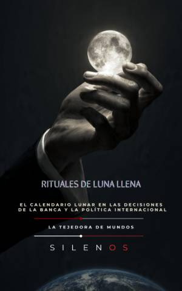

Illuminati
RITUALES DE LUNA LLENA : El calendario lunar en las decisiones de la banca y la política internacional
Sinopsis
Descubre la conexión invisible entre los ciclos lunares y el poder global RITUALES DE LUNA LLENA no es solo un recorrido por la astronomía o el esoterismo tradicional; es una investigación profunda sobre cómo el calendario lunar ha moldeado las decisiones de las instituciones más influyentes del mundo, desde la banca internacional hasta la geopolítica moderna. A través de sus páginas, Manuel Rodsua y Cristina Lobo desentrañan una red de influencias que conecta los antiguos templos de Sumeria con las logias discretas y los despachos de poder contemporáneos. Este libro explora la "gramática del rastro": cómo los símbolos y los ciclos naturales se han convertido en tecnologías de control y herramientas de diplomacia en la penumbra. ¿Qué encontrarás en este libro? La institucionalización de la mirada: Desde el zigurat hasta la infraestructura del silencio de los Templarios. Sociedades discretas y geopolítica: Un análisis sobre los Illuminati, las logias universitarias y la Orden de los Nueve Ángulos. Ciencia y expansión de la conciencia: El rastro psicodélico en la antigüedad, el nacimiento del LSD con Albert Hofmann y los oscuros experimentos de MK Ultra. Gobernanza lunar: Una reflexión sobre la impermanencia, la ética política y el futuro de nuestra relación con el cosmos. Una obra para mentes inquietas Este libro es esencial para quienes buscan comprender los mecanismos invisibles que rigen el mundo. Es una invitación a mirar al cielo no solo con curiosidad científica, sino con la conciencia de que los ciclos de la Luna siguen dictando, en silencio, el veredicto de nuestra conducta humana y nuestras estructuras de poder. Sumérgete en una narrativa que une historia, esoterismo y política en una síntesis reveladora.